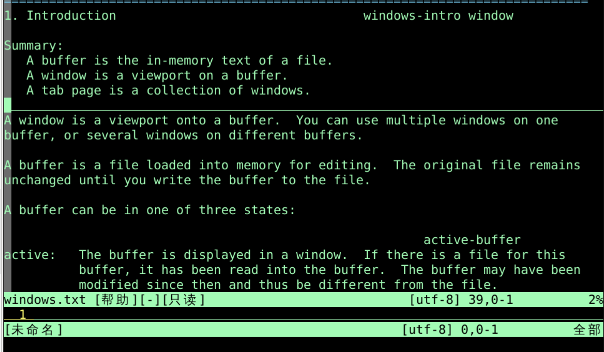
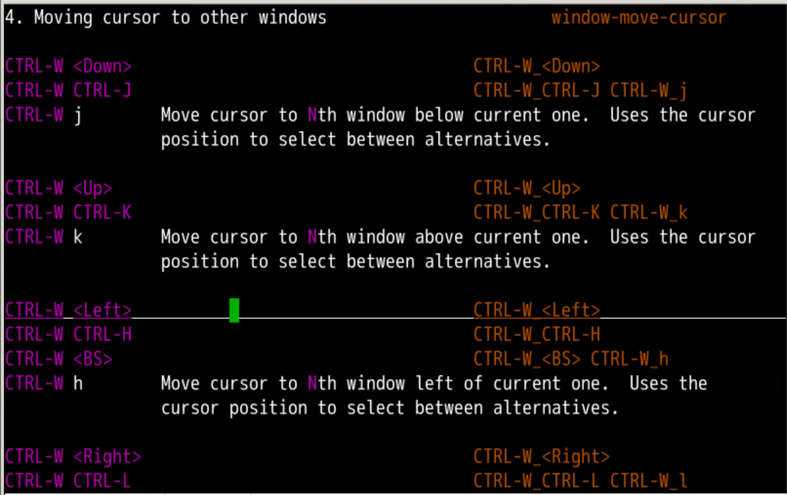
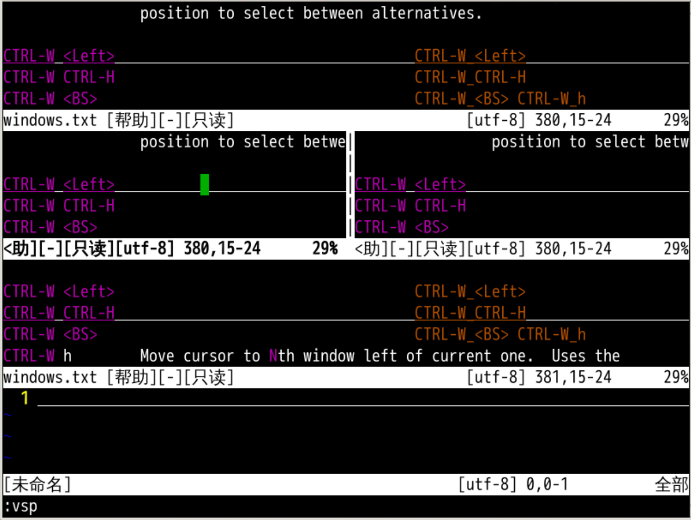
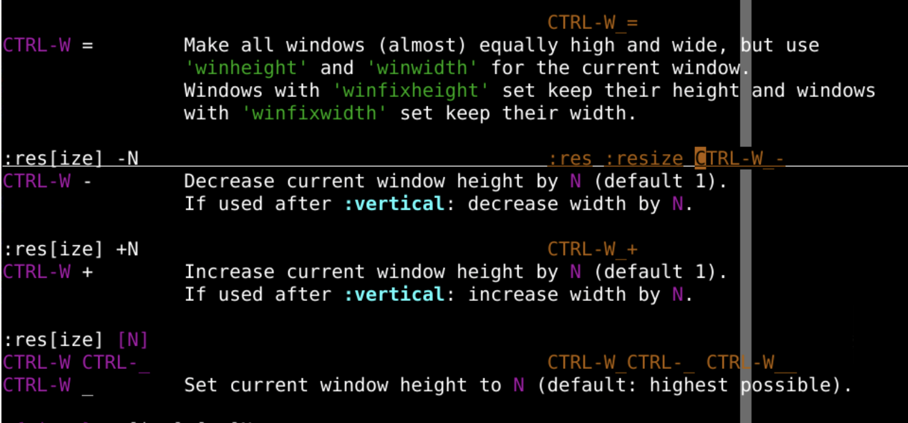
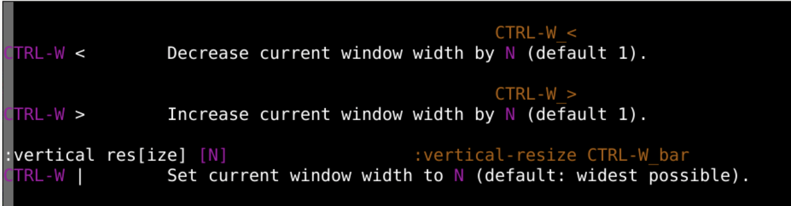
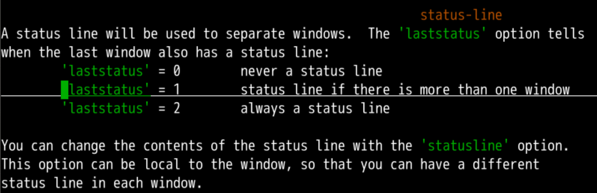
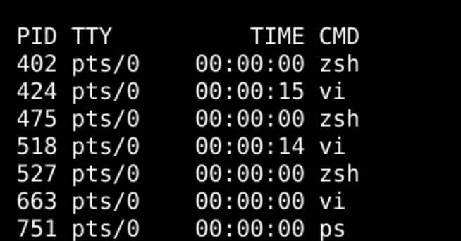

ls可以查看buffer如下是buffer缓冲的一些flag
+ 有修改未保存内容 - 可修改标签关闭= 只读缓冲区a 活跃缓冲区 u 没有在列表里面的缓冲区h 隐藏缓冲区x 有读取错误的缓冲区% 当前缓冲区# 有swap替换文件的缓冲区可以在buffer跳转
bn[ext],选择下一个bufferb[uffer1]、b2进入指定的 bufferb[uffer] oeasy.txtbf[irst]，打开第一个bufferbl[ast]，打开最后一个bufferhiddenautowritemA 添加标记'A 跳转到标记:q!buffer :qall!:wall:wqallvim中打开的两个文件缓存buffer:h window
buffer缓存 是内存中的文件缓存window窗口 是打开 buffer 的一个视角tab 标签是 window窗口的集合:sp[lit]来上下切分窗口:q退出当前窗口
:sp[lit]切分 窗口之后:sp[lit]:vsp[lit]vertical 垂直方向window 再垂直方向上进行切分
:q:q! buffer :qall!:wall:wqall:on[ly]window，其余的都hidden:hidewindow:set autowrite了hidden的时候就自动保存高度
window 高度减小:res[ize] -N window 高度增大:res[ize] +N :res[ize] N80*24宽度
window 宽度减小window 宽度减小N:vertical res[ize] -Nwindow 宽度增大:res[ize] +N :vertical res[ize] N80*24
:set laststatus=0不用状态横条:set laststatus=1有多个窗口的时候，最底下有一个状态横条:set laststatus=0各窗口有各自的状态横条:terminal或者:ter切换到命令模式window ?shell ?exit 命令
:vertical terminal:vert terwindowbuffer 的buffer 是在内存里面载入的硬盘文件:sp[lit] 水平切分:vsp[lit] 垂直切分:hid[e]可以隐藏当前窗口window中buffer不保存autowrite:on[ly]可以全屏当前窗口:hide状态'laststatus' 可以设置状态横条:terminal 可以开启终端window窗口,还挺方便